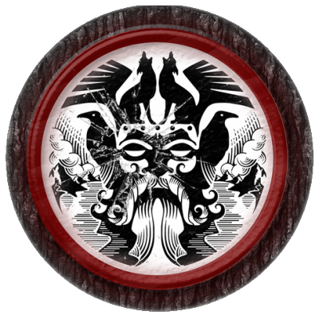
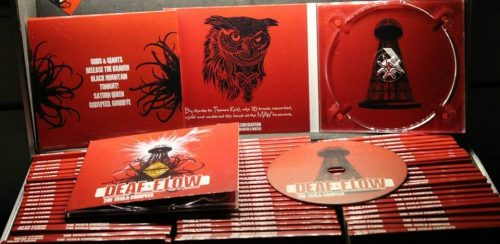
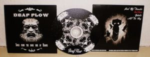

Deaf Flow
Logbuch des Kapitäns
Stoner Ear Candy Rock
zwischen heavy und catchy!
Stoner Ear Candy Rock
zwischen heavy und catchy!
Platzhalter Platzhalter Platzhalter Platzhalter Platzhalter Platzhalter Platzhalter Platzhalter Platzhalter Platzhalter
Platzhalter Platzhalter Platzhalter Platzhalter Platzhalter Platzhalter Platzhalter Platzhalter Platzhalter Platzhalter
Ahoi! Nach über einem Jahr Landurlaub stechen DEAF FLOW im Oktober wieder in See! Zusammen mit den Smoking Thompsons haben wir uns einen fabelhaften Gig der besonderen Art geangelt. Begleitet uns nach Tempelhof, dort hört ihr die Sirenen rufen: Denn für euch gibt‘s fette Beute. Die Thompsons servieren ihre neue delikate Platte! Von uns gibt’s als Beilage aufgewärmte und (Obacht!) den ein oder anderen ganz frischen Song. Und da ihr akustisch einfach nicht satt zu kriegen seid, schenken die Drunken Masters of the Universe noch einmal kräftig nach. Also lasst euch diesen fantastischen Abend, ausgeschmückt mit melodischen Ohrenschmeichlern, nicht entgehen!
Die Smoking Thompsons promoten ihr neues Album „Circles“ auf ihrer internationalen „Break Out Tour 2018“. Ihr könnt ihnen folgen u.a. auf Facebook, Wordpress und YouTube.
Landeplan
Howdy, Partner! Zwei Tage vor Heilig Abend haben wir die Ehre RED BEARD im heimischen Cortina Bob zu supporten. Wenn man den Jungs aus Spanien so zuhört, scheint der Weihnachtswahnsinn ganz weit weg. Denn mit ihrem genialen Southern Rock / Country style, fühlt man sich direkt in die sorgenfreie, amerikanische Prärie versetzt. Also rauf den Gaul, Revolver durchladen und den Hut ins Gesicht ziehen. Wir reiten mit euch zu diesem ganz speziellen Abenteuer in den fernen Westen.
Da DEAF FLOW den Support für die Rotbärte an diesem Abend gibt, ist ein spannender und bisher ungehörter Genremix zu erwarten! Wir spielen euch zwar nicht das Lied vom Tod, aber für eine handvoll Dollar schürfen wir euch live ein paar akustische Goldnuggets.
RED BEARD sind auf Tour durch Europa und USA um ihr bisher unveröffentlichtes, viertes Album zu promoten - DAKOTA. Ihr könnt ihnen folgen auf Facebook, Instagram, YouTube und auf ihrer Webseite. Wenn ihr Bock habt auf Flanellhemd und Mundharmonika, dann seid ihr hier genau richtig!
Landeplan
Am Samstag werden wir das ehrwürdige Wild At Heart mit unseren Monstersongs / Songmonstern beehren. Mit dabei sind die legendären Sasquatch aus dem transatlantischen Amerika. Wir hoffen ihr besucht uns bei der ersten Ausfahrt dieses Jahr. An Deck geht es ab 20 Uhr und die Leinen werden um 22 Uhr losgemacht.
Nachtrag (11.12.2016): Danke, dass ihr da wart! Das war ein toller Abend!
Die Instrumente sind wieder verladen und das Paddelbot zum Schiff heimgekehrt. Nach dieser Flut folgt nun eine entspannte Ebbe, die Gezeiten machen auch vor uns keinen Halt. Es soll der letzte Ausflug im Jahre 2016 für die Manschaft gewesen sein.
Im Lichte des Mondes hoch über dem stillen Meer blicken wir auf einen tollen Abend zurück. Die Besatzung der Samba Cementery und Redscale haben sich überwältigend geschlagen. Wir haben neue Freunde gefunden und alte getroffen. Wir haben in heiterer Runde die Lieder unserer Vorfahren gesungen, und den Gerstensaft geschmeckt wie lange zuvor nicht mehr. Man sagt, der musikalische Klang hallt immernoch durch die Nacht.
*Nachtrag (01.12.2016):* Smoking Thompsons mussten leider aus gesundheitlichen Gründen absagen. Als Ersatz springen die fantastischen Kollegen von Redscale ein.
Nach vielen Monaten größter Anstrengungen auf rauer See sind wir endlich soweit, die wertvolle Stoner-Schiffsladung abzuliefern, nach welcher überall im Lande gefragt wird. Die Fabeln und Geschichten, welche sich über die Ozeane der Welt getragen haben, wurden in runde Kunststoffe gemeißelt und frisch verpackt zum nächsten Heimathafen transportiert.
Wir feiern die Veröffentlichung unserer neusten EP “Götterdämmerung” im gemütlichen Cortina Bob und laden unsere Freunde und Feine ein; und die die es werden wollen! Macht euch auf einen Sturm der Lautstärke und Ekstase gefasst. Wir werden die heiligen Hallen des Berliner Clubs zum Erschüttern bringen. Und unsere Schiffsbesatzung kommt nicht allein!
Mit dabei sind die beiden genialen Berliner Samba Cementery und Smoking Thompsons.
Vorgestellt Samba Cementery:
Das Berliner Stoner-Rock Trio „Samba Cemetery“ spielt seine ganz eigene, handgemachte & rotzfreche Interpretation des Genres. Dank lateinamerikanischem Einfluß entsteht ein Groove der für einen hohen Wiedererkennungwert sorgt. Knurrende Gitarrenbretter wandeln sich zu psychedelischen Solo-Passagen, eingängige Hooklines provozieren hartnäckigste Ohrwürmer. Eine explosive Mischung, die man erlebt haben will. Diese Jungs haben Hunger!
Vorgestellt Smoking Thompsons:
Der Name “Smoking Thompsons” steht für eine musikalische Vielfalt und eine Reise durch die verschiedensten Musikstile. In ihrer Musik werden Element aus den Bereichen Alternativ, Rock , Punk, Grunge und Stoner vereint. Seit 2008 nun gibt es die Band und sie können auch einiges an Liveerfahrung vorweisen. Sie rockten Club- und Festivalbühnen, zusammen mit Bands wie: iO (Ex Guano Apes), Black Sparx, 4LYN, Daniel Wirtz, Berserker, Dritte Wahl und supporteten Samavayo auf ihrer “One Million Things” Tour. Im Juli 2010 veröffentlichten die Jungs - nach einigen EP´s - ihr erstes Album und gingen damit auf eine Record Release Tour durch Deutschland. Mit diesem Album wurde ein großer Schritt nach vorn gemacht …. musikalische Vielfalt on the Road könnte man meinen.
Landeplan
Das alte Schiff Deaf Flow hat bereits viele Meere bereist. Unser Geschichtenerzähler und Schiffsschreiber hat die vergangenen Erfahrungen einmal in einer fiebergeplakten Vollmondnacht auf Papier gebannt.
“Doom fickt gut“ wissen die drei Jungs von Deaf Flow, aber leider kann man nicht dazu tanzen. Darum machen die Berliner eingängigen und tanzbaren Heavy-Rock mit Stoner-Einschlag, den sie „Disco-Doom“ getauft haben.
Frei nach der bekannten Swinger-Club-Regel „Alles kann, nichts muss!“ kombiniert das Trio rifflastige Sounds mit prägnanten Rhythmen und bewahrt sich stilistische Offenheit. Beseelt vom DIY-Geist steckt die Band viel Energie und Fleiß in ihr Weiterkommen.
Seit der Veröffentlichung der letzten EP hat Deaf Flow sowohl live als auch im Proberaum viel Neues ausprobiert. Der daraus entstandene Sound ist geradlinig, aber vielschichtig, die Grundstimmung düster, aber nicht hoffnungslos.
„Götterdämmerung“ drängte sich daher als Titel für die im Mai 2016 in Eigenregie aufgenommene EP geradezu auf. „Black Heart“ und „Deaf Rays 2000“ spiegeln die dunkle Seite der modernen Welt wider, „Sirens“ und „Hulas“ zeigen, dass nicht alle Hoffnung verloren ist. Die Band ist heiß darauf ihre „Götterdämmerung“ auf einer bundesweiten Tour einem breiteren Publikum vorzustellen. Wenn sie ihre Live-Energie entfaltet, zieht sie noch Leute aus den letzten Reihen in ihren Bann.
Songs:
Beteiligte:
Say it loud - DEAF FLOW is back and proud! High Voltage! Ein elektrischer Schlag ins Gesicht vor dem Leuchtturm der Erkenntnis: Die gerade aufgenommene 6-Track-EP “The Tesla Complex” ist noch warm und steht bereits in den Startlöchern. Die klassischen Einflüße ihrer Anfangstage ließen Deaf Flow auf der neuen Platte hinter sich und kreierten einen eigenen Stil, der moderne Elemente in klassischen Heavy Rock Sound einbindet: Harte aber auch sehr knackige und melodiegetriebene Songs sind das Ergebnis, geprägt von muskulösen Rhythmen, zugkräftigen Melodien und einprägsamen Vokalparts. “Madonna trifft Mastodon” … “Prince paart sich mit Pearl Jam” und “QOTSA fickt Queen”!
Das Trio ist heiß darauf „The Tesla Complex“ auf einer bundesweiten Tour einem breiteren Publikum vorzustellen. Ob als Support vor ausverkaufter 500er Venue oder nachts um drei im Szeneclub - wenn die Band eines bewiesen hat, dann dass man sich ein Konzert von DEAF FLOW nicht entgehen lassen sollte!
Songs:
Beteiligte:
… of Uranus.
“Tja, ich schätze ihr seid wohl noch nicht so weit, aber eure Kinder fahren da voll drauf ab!” – mit diesem Zitat beendeten DEAF FLOW ihr erstes Konzert. Ein halbes Jahr zuvor - im Sommer 2011 - hatten sich vier Berliner unter der Prämisse gemeinsam Spaß zu haben, Live zu spielen und Leute zu begeistern – gesucht und gefunden. Letzteres klappt inzwischen auch wunderbar, wie steigende Besucherzahlen/steigende Umsätze am Merchstand belegen.
Die im Dezember 2012 veröffentlichte EP: „Songs From The Dark Side Of Uranus“ lieferte der Band erste Aufmerksamkeit und Achtungserfolge und wurde kräftig betourt.
Songs:
Beteiligte:
Visions Magazin 11/2014
Demo des Monats, “Noch nicht mal eine Sekunde dauert es, bis Deaf Flow auf The Tesla Complex die Bassfrequenzen durch den Fuzz ziehen und damit die Maxime für ihre EP vorgeben: Hauptsache dreckig. Dank ihrer Vorliebe für rhythmische Hüftschwünge und der leicht diaboligschen Gitarrenarbeit klingen Deaf Flow wie The Stone Age und machen trotz ihrer urbanen Herkunft glaubhaft einen auf Wüstensöhne.”
Rock Hard Magazin 11/2014
“Samt mittelschwerer Neunziger-Schlagseite, Salut in Richtung Seattle und einem ordentlichen Schuss QOTSA agiert das Berliner Trio mit kraftvoll brummendem Sound zwischen Stoner- und Schweine-Rock und findet dabei die goldene Mitte, gleichermaßen heavy wie catchy-poppig rüberzukommen.”
“Wer auch nur ein bisschen auf Stoner, Doom, QOTSA oder Sludge abfährt, dürfte in Deaf Flow eine der vielversprechendsten Nachwuchshoffungen dieses Bereichs gefunden haben. Geile Gitarre, geile Drums, geile Basslines, geile Vocals, geiler Sound – braucht das Trio wirklich noch mehr Argumente? Hört euch die Songs an.”
“The band is definitely one of the most interesting newcomer from Germany and I think on stage they will destroy everything! If you are in Stoner and Sludge Rock - check this Berlin combo out!”
“Als Fazit darf man konstatieren, dass diese EP richtig Spaß macht: Riffmächtig, druckvoll, unkonventionell und zeitgemäß, bei gleichzeitiger Grundierung in Stoner, Sludge und Grunge. Von DEAF FLOW darf man noch Einiges erwarten. Schön, dass aus der Hauptstadt auch mal wieder solche derb rockigen Töne kommen.”
“Schön gemachter Stonerrock. Passt zum aktuellen Wetter, ist kurzweilig und macht Spass. Vielleicht kann man die Herren beim nächsten Berlin Aufenthalt mal live bewundern. Handwerklich gut gearbeiteter Sound, der natürlich geblieben ist und dort Ecken hat, wo sie hingehören”
“Aus der Berliner Brodelrockschmiede, hat DEAF FLOW an seinem Sound gehörig herumgeschraubt, seit der letzten Veröffentlichung Ende 2012, mehr Schmackes, mehr hurtige Härte, mehr Variation. Das fällt gleich mal anfangs auf.”
“Deaf Flow are three guys from Germany that put down heavy tracks of Grunge and Stoner influenced Hard Rock. Seemingly with each song, you’re presented with a slightly different take on what Heavy Rock can be today, from grungy Hard Rock tracks that could of been a hit back in the 90’s to Stoner Rock jams that would have some of the most ardent Kyuss fans grooving along.”
Ihr Motor ist der Spaß am gemeinsamen Musizieren. Die Inspiration für ihre Songs ziehen sie aus den unterschiedlichsten Bereichen: Mythologie und Wissenschaft, Comichelden und B-Movies. Daraus entstehen knackige, tanzbare Songs, die skurrile oder absurde Geschichten mit eingängigen Melodien und harten Gitarrenriffs verweben.
„Unser Anspruch ist es originell und unterhaltsam, nicht innovativ zu sein:“- daraus sollte man aber nicht schließen, dass Deaf Flow langweilig und artig sind. Die Band verachtet die üblichen Rock’n’Roll-Konventionen; dies zeigt sie zum Beispiel beim Verzicht auf die klassische Peter-Bursch-Daumenhaltung beim Gitarrespielen, viel zu häufigen Einsatz der Kopfstimme in Refrains und den Verzicht auf Cowbells. Songs wie „Destroyer“ und „Release The Kraken“ beweisen, dass die Band über sich selbst und ihr Genre lachen kann und gute Rockmusik nicht bierernst sein muss, um Spaß zu machen.
Doch Spaß allein reicht nicht: „Aus eigener Kraft möglichst viel zu erreichen“ - von diesem DIY-Geist ist die Band beseelt. Vom Booking, über die Planung bis hin zum Design von Plattencover und Merchandising-Artikeln steckt die Band viel Energie und Fleiß in ihr Weiterkommen.
{kind=link}